Movie Screening: Interstellar
About Event
Why Interstellar?
Cinema has always served as a powerful medium to share ideas, inspire imagination, and ignite curiosity. Among all genres, science fiction has uniquely contributed to making complex scientific concepts accessible to the masses — and *Interstellar* is a prime example.
On the 10th anniversary of this cinematic masterpiece, Quantum Quorum hosted a special screening on campus to celebrate the film's impact on scientific storytelling and to bring together students and faculty with a passion for both cinema and science.
Purpose and Impact
- To reignite scientific curiosity through the medium of film
- To appreciate high-quality storytelling and sci-fi imagination
- To raise funds for charity through screening profits
Audience & Feedback
- Large turnout from both students and faculty
- Included cinephiles, science enthusiasts, and curious learners
- Positive feedback on the initiative and the quality of the film
- Faculty attended not only for the film, but to support the charitable cause
Event Image Gallery
 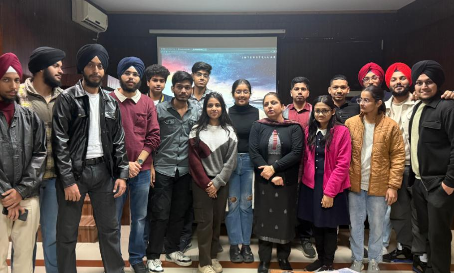
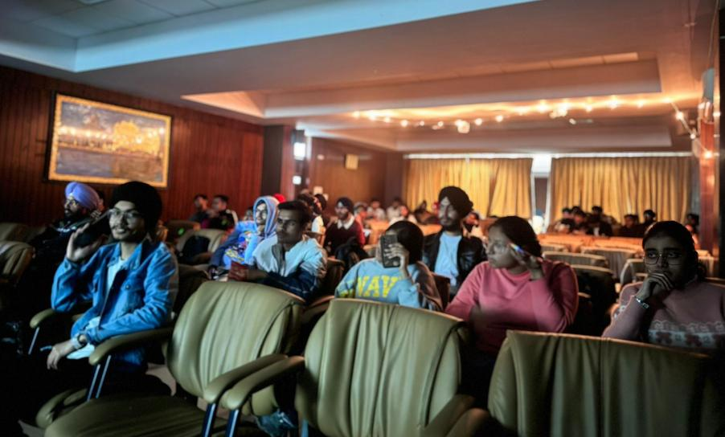
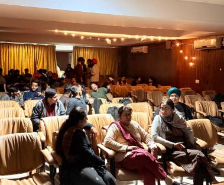
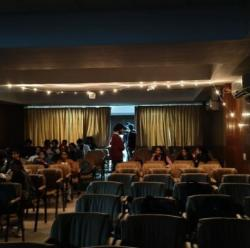
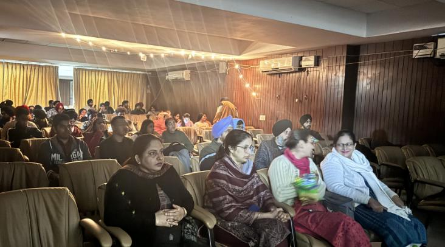
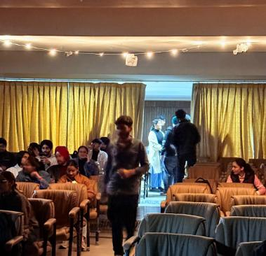
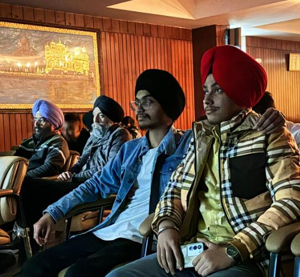
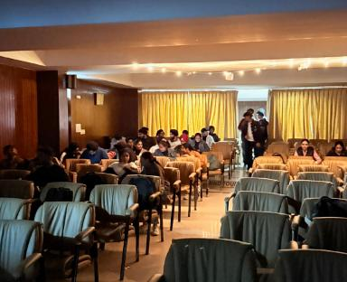
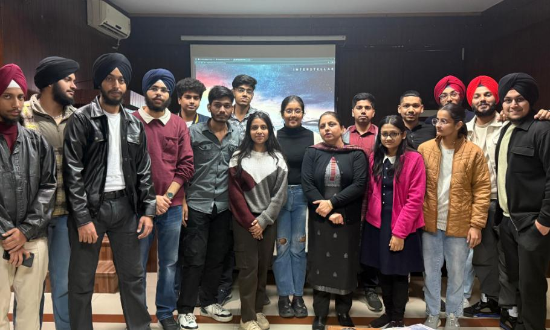
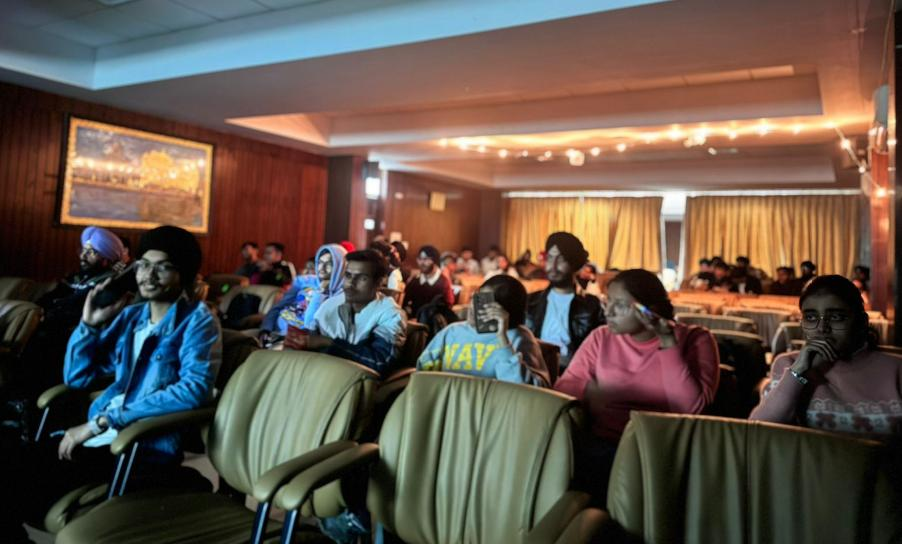
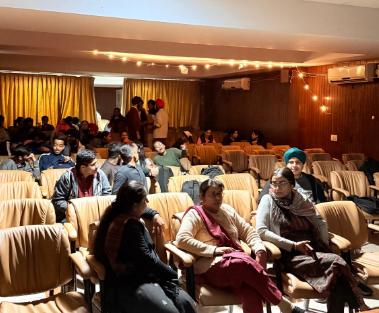
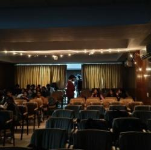
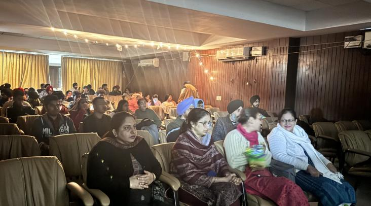
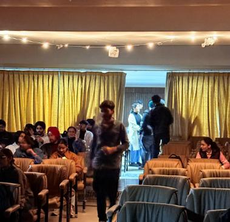
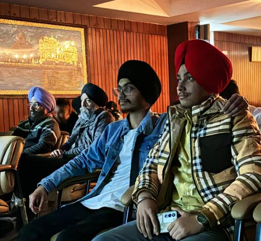
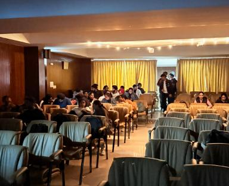